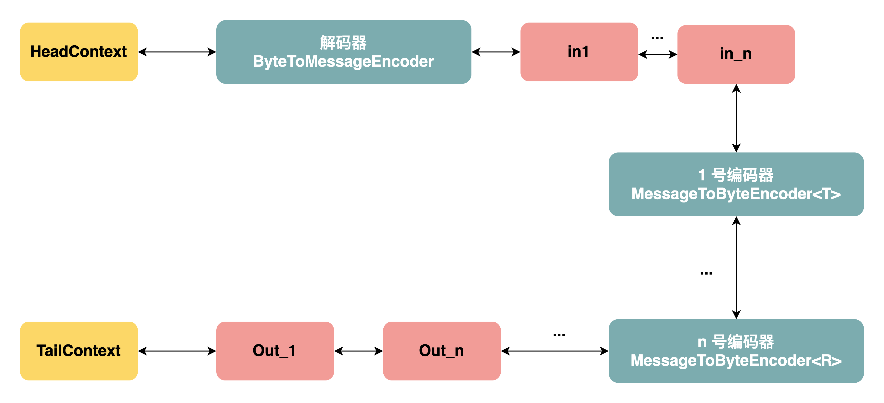

Netty 如何实现自己的解码器与解码器
文章目录
Netty 如何实现自己的解码器与解码器
建议首先理解 Netty 的 ChannelPipeline 管道执行模型。
本文的部分代码案例来自于如下开源项目：https://github.com/Snailclimb/guide-rpc-framework
1. 自定义解码器
如何实现自己的解码器，首先需要懂得字节数据从 HeadContext 如何向后传播的。
- 首先，HeadContext 在接收到来自 Client 的数据包后，就会触发读事件，即调用 HeadContext#channelRead 方法将读事件对应的 ByteBuf 实例向后传播；
- 其次，我们需要自己实现一个解码器，解码器用于接收来自 HeadContext 的字节数据、实现字节数据累加器逻辑；
- …
我们自己实现的解码器通常继承于 ByteToMessageDecoder，而编码器则继承于 MessageToByteEncoder<T>，为此我们要理解这两类提供了什么？
ByteToMessageDecoder#channelRead 方法执行的大致逻辑是（省略一个指针的处理逻辑）：
- 因为 TCP 数据包传输的字节大小不确定性，其首先进行字节累加器的逻辑处理；
- 检查 CodecOutputList 实例（本质上为 List<Object> 类型实例）是否大小为空，如果不为空，那么就调用 ChannelHandlerContext#fireChannelRead 方法将每一个解码后的元素向后传播；
- 将累加器以及 CodecOutputList 实例交给 ByteToMessageDecoder#decode 方法来处理（需要具体的子类来实现）；
因此，我们在 ByteToMessageDecoder 子类中仅仅需要实现 decode 方法，decode 方法的作用如下:
- 在解析累加器（ByteBuf）之前，先通过方法 ByteBuf#markReaderIndex 方法标记当前读指针的大小，因为如果 TCP 数据包不完整，那么需要重置读指针；
- 判断累加器中的字节数据长度是否大于协议规定的最小字节长度，如果不是，那么直接返回即可；
- 通过读取协议中标识整个消息字节长度的 int 数值（或者还需要额外的计算）得到整个数据包的长度，如果数据包小于总长度，说明此时 TCP 的 Socket 接收到的数据包是不完整的，因此需要重置 readIndex，否则通过解析数据包，然后通过协议得到我们所需要的字节数据，然后将字节数据反序列化为实例（例如 RPC 消息实例）；
- 如果最终一切顺利，那么将得到一个反序列化之后的实例，接着，我们就应当将该实例添加到方法入口参数的 List<Object> out 链表中；
注意事项：如果你熟悉异步编程的话，那么很容易想到这个 List<Object> out 就是一个队列：
- 线程 1 负责将字节数据封装为协议规定的数据包，然后加入到名为 out 的队列中；
- 此时应当有线程 2 负责将消费 out 队列中的元素；
但是事实上并非如此，因为 EventLoop 内部只有一个线程，该线程即是 out 队列的生产者，也是 out 队列的消费者，而且还是还会负责 out 队列上元素的管道事件传播。
因此，重中之重：单线程执行模型！
一个解码器的例子如下：
|
|
关键操作：
- 读取 ByteBuf 字节数据之前的 readIndex 指针的暂时标记：ByteBuf#markReaderIndex；
- 发现 ByteBuf 存在 TCP “分包”现象后的 readIndex 指针的回滚：ByteBuf#resetReaderIndex；
2.自定义编码器
编码器则相对简单不少，因为完全不需要考虑 TCP 的”分包“问题，不过需要注意这里的事件传播机制。
Netty 写事件的时间传播机制依赖于默认实现：
- AbstractChannelHandlerContext 的 write 方法默认实现是调用下一个 ChannelOutboundHandler 的 write 方法；
- ChannelOutboundHandlerAdapter#write 方法的默认实现是调用 ChannelHandlerContext#write 方法。
编码器作为一种 ChannelOutboundHandlerAdapter 的子类，其重写了写事件的事件传播逻辑，因为在后面的 ChannelOutboundHandler 的写事件类型实际上为任意类型的实例，然后 HeadContext 仅仅接收事件类型为 ByteBuf 的实例。只有字节数据才能够被 HeadContext 作为写事件发送。
MessageToByteEncoder<T> 类重写了 ChannelOutboundHandlerAdapter#write 方法，其工作逻辑如下：
- 检查写事件的具体类型是否为 T，如果是，那么继续处理，否则不再处理（相当于抛弃此实例）；
- 向内存分配器索要一个 ByteBuf 实例；
- 将强制类型转换为 T 类型后的写事件（Object msg）、ChannelHandlerContext、刚刚申请 ByteBuf 实例作为参数，来调用 MessageToByteEncoder#encode(ChannelHandlerContext ctx, I msg, ByteBuf out) 方法；
- 不管上一步是否报错或者出现异常，在 finally 语句块中释放写事件资源 Object msg 实例；
- 判断经过 encode 方法处理过的 ByteBuf 实例是否有可读数据，有说明编码成功，那么就进行后续处理，否则说明编码失败，那么就通过 ByteBuf#release 方法将此资源释放，然后向前传播一个 final 资源：字节数为 0 的 ByteBuf 实例；
- 下一步是对有字节数据的 ByteBuf 实例向前传播，方式很简单就是调用 ChannelHandlerContext#write 方法；
- 通常而言，MessageToByteEncoder<T> 类仅仅会一种消息类型进行传播，如果前面还有 MessageToByteEncoder<R> 实例，那么因为消息的类型不符合要求，最终就是将消息继续向前传播，因此 ByteBuf 实例总是最终会被 HeadContext 来处理。HeadContext 会负责将 ByteBuf 中的字节输入写入到 TCP 底层的 Socket，然后释放 ByteBuf 实例资源。
因此，我们实现一个自定义编码器非常简单，仅仅需要继承 MessageToByteEncoder<T> 类，然后重写其 encode 方法。
下面则是一个 encode 方法的案例：
|
|
虽然从内部的执行复杂度上来说，编码器也不简单，但是编码器的代码编写难度比解码器要高上不少。
因此通常一个完整的编解码器处理链如下图所示：

需要指出的是：
- 编码器由于设计上提供多态，因此我们可以为不同的写消息提供不同的编码器，因此在一个 ChannelHandler 的 ChannelPipeline 中可以存在多个解码器（但要求它们的泛型类型不同，第二个以及之后重复编码器将不起作用）；
- 解码器由于在设计上并不提供多态，因此即使可以处理多种协议的解码器，但是在请求处理链中，通常也不会通过多个解码器 ByteToMessageDecoder 来实现；